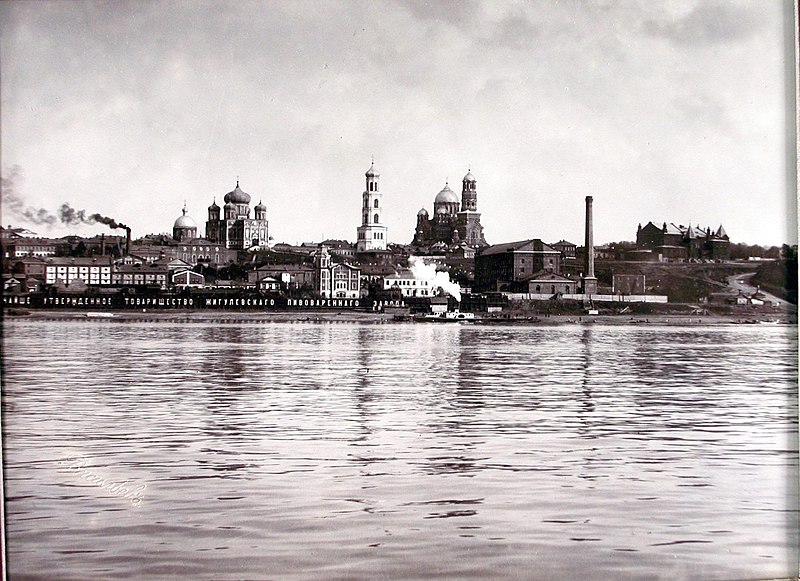

Данный сайт посвящен достопримечательностям моего родного города-Самары. На страницах сайта вы сможете ознакомиться с информацией по самым интересным местам Самары, имеющим историческую, культурную или архитектурную ценность и привлекательность. Здесь я постарался собрать информацию, найденную мной на просторах интернета, поэтому какие то вещи со временем могут меняться, актуализироваться либо терять свою актуальность, на абсолютную достоверность предоставляемой информации не претендую. При создании сайта материалы, обремененные авторскими правами не использовались. Приятного просмотра!
